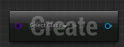
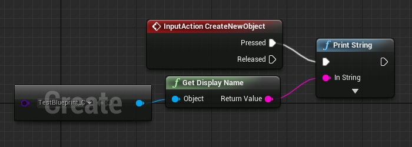
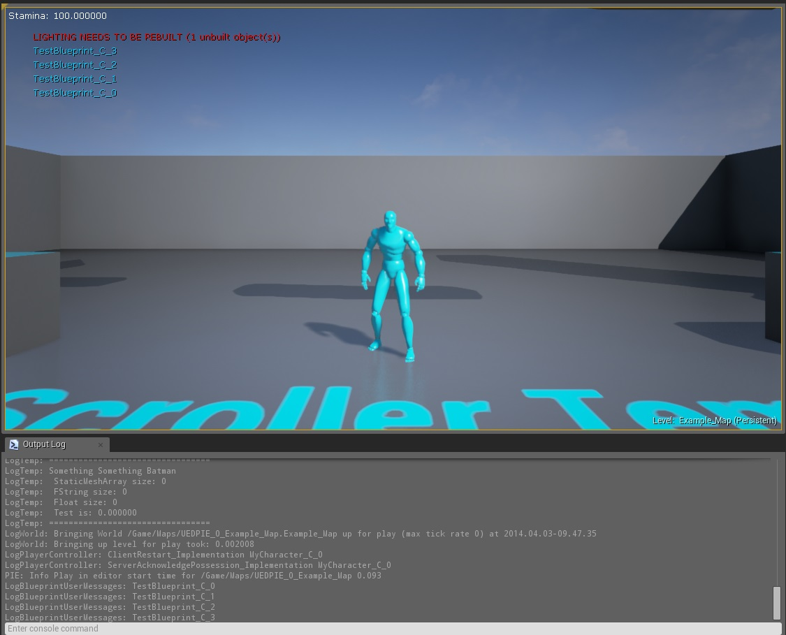

Blueprint Node: Create Object from Blueprint
Overview
This snippet shows you how to make a custom blueprint node that instantiates an object from a blueprint (that extends Object). It was created with assistance from MonsOlympus.
Being able to instantiate an object class from Blueprints like this is useful as objects provide a nice way to store data without any having any of the overhead that actor classes create.
This snippet won't go into major detail, as you should first - It explains how to create your own custom nodes, and the features available (and what they do). - ( )
I have updated this tutorial to work for 4.8, as well as added a note about using 4.9. - ( )
Note: Using 4.9+
In 4.9, Epic has added a blueprint node to do just this. It's called "Construct Object from class", and it's pretty useful. If your wanting to know how to create objects within c++, or interact c++ and blueprints, this tutorial is still useful: however if you want to create an object from blueprint, I advise you use the new built in blueprint function. Good luck!
The Code

(Note that the "HyperPro.h" should be replaced with your project name)
CPP file:
//Copyleft under the creative commons license
//For details see http://creativecommons.org/licenses/by-sa/4.0/
#include "HyperPro.h"
#include "CreateNewObject.h"
UObject* UCreateNewObject::NewObjectFromBlueprint(UObject* WorldContextObject, UClass* UC)
{
UWorld* World = GEngine->GetWorldFromContextObject(WorldContextObject);
UObject* tempObject = NewObject<UObject>(UC);
return tempObject;
}
Header file (.h):
//Copyleft under the creative commons license
//For details see http://creativecommons.org/licenses/by-sa/4.0/
#pragma once
#include "Kismet/BlueprintFunctionLibrary.h"
#include "CreateNewObject.generated.h"
UCLASS()
class UCreateNewObject : public UBlueprintFunctionLibrary
{
GENERATED_BODY()
UFUNCTION(BlueprintPure, meta = (HidePin = "WorldContextObject", DefaultToSelf = "WorldContextObject", DisplayName = "Create Object From Blueprint", CompactNodeTitle = "Create", Keywords = "new create blueprint"), Category = Game)
static UObject* NewObjectFromBlueprint(UObject* WorldContextObject, UClass* UC);
};
Result in editor
Using a Blueprint extending object named "TestObject":

